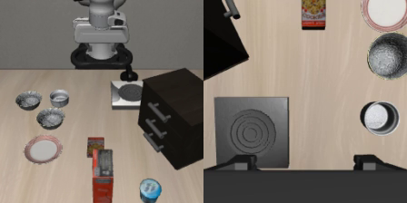
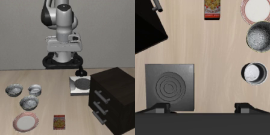
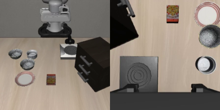
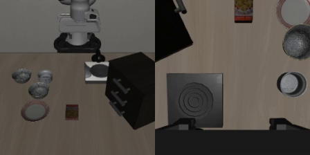
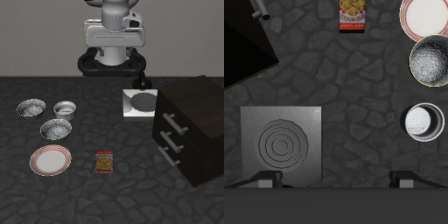

PLUS
七类扰动，各选一条真实评测任务。切换下方标签，看具体输入有什么不同。

ONE TASK / Objects Layout
物体布局 · 任务样例
pick the akita black bowl between the plate and the ramekin and place it on the plate
这一组测什么目标或干扰物布局发生变化，需要重新定位操作对象。
任务来源与编号
pick_up_the_black_bowl_between_the_plate_and_the_ramekin_and_place_it_on_the_plate_add_10
suite: libero_spatial · task_id: 1725 · init_id: 0 · seed: 7
所选场景用于解释任务输入，不以单例推断整个 subset 的表现。

ONE TASK / Camera Viewpoints
相机视角 · 任务样例
pick the akita black bowl between the plate and the ramekin and place it on the plate
这一组测什么相机位置或方向改变，任务目标不变。
任务来源与编号
pick_up_the_black_bowl_between_the_plate_and_the_ramekin_and_place_it_on_the_plate_view_0_0_100_2_352_initstate_0
suite: libero_spatial · task_id: 608 · init_id: 0 · seed: 7
所选场景用于解释任务输入，不以单例推断整个 subset 的表现。

ONE TASK / Robot Initial States
机器人初态 · 任务样例
pick the akita black bowl between the plate and the ramekin and place it on the plate
这一组测什么从不同的机械臂初始状态开始执行。
任务来源与编号
pick_up_the_black_bowl_between_the_plate_and_the_ramekin_and_place_it_on_the_plate_view_0_0_100_0_0_initstate_1
suite: libero_spatial · task_id: 258 · init_id: 0 · seed: 7
所选场景用于解释任务输入，不以单例推断整个 subset 的表现。
ONE TASK / Language Instructions
语言指令 · 任务样例
grasp the darkhued rounded container situated between the flat dish used for serving food and the small glazed ceramic dish and set it down onto the flat dish used for serving food
这一组测什么用不同表达描述同一个操作目标。
任务来源与编号
pick_up_the_black_bowl_between_the_plate_and_the_ramekin_and_place_it_on_the_plate_language_1_view_0_0_100_0_0_initstate_0
suite: libero_spatial · task_id: 984 · init_id: 0 · seed: 7
所选场景用于解释任务输入，不以单例推断整个 subset 的表现。

ONE TASK / Light Conditions
光照条件 · 任务样例
pick the akita black bowl between the plate and the ramekin and place it on the plate
这一组测什么改变光照，仍需识别并操作指定物体。
任务来源与编号
pick_up_the_black_bowl_between_the_plate_and_the_ramekin_and_place_it_on_the_plate_light_1
suite: libero_spatial · task_id: 2110 · init_id: 0 · seed: 7
所选场景用于解释任务输入，不以单例推断整个 subset 的表现。

ONE TASK / Background Textures
背景纹理 · 任务样例
pick the akita black bowl between the plate and the ramekin and place it on the plate
这一组测什么改变桌面或背景外观，保持对任务目标的关注。
任务来源与编号
pick_up_the_black_bowl_between_the_plate_and_the_ramekin_and_place_it_on_the_plate_table_1
suite: libero_spatial · task_id: 0 · init_id: 0 · seed: 7
所选场景用于解释任务输入，不以单例推断整个 subset 的表现。
ONE TASK / Sensor Noise
传感器噪声 · 任务样例
pick the akita black bowl between the plate and the ramekin and place it on the plate
这一组测什么图像含噪声或退化，考查观测鲁棒性。
任务来源与编号
pick_up_the_black_bowl_between_the_plate_and_the_ramekin_and_place_it_on_the_plate_view_0_0_100_0_0_initstate_0_noise_3
suite: libero_spatial · task_id: 1374 · init_id: 0 · seed: 7
所选场景用于解释任务输入，不以单例推断整个 subset 的表现。